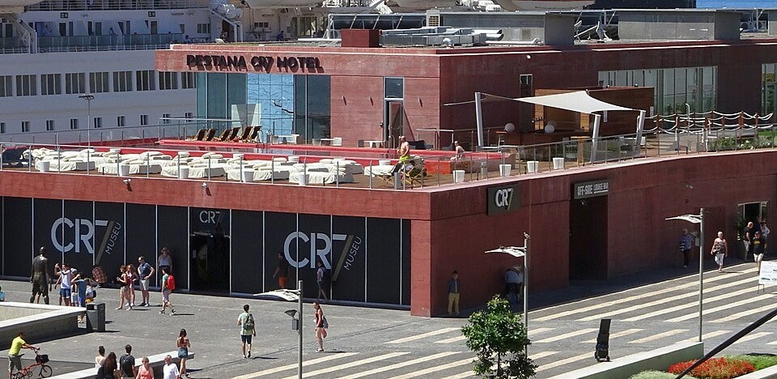

The CR7 Museum — A Shrine to Himself Before Retiring (+ the Infamous Airport Bust)
A shrine to himself: On 15 December 2013 Ronaldo cut the ribbon on the Museu CR7 in his native Funchal — 400 square metres dedicated entirely to his own career, run by his elder brother Hugo Aveiro. It opened with 50-odd exhibits and has since grown to around 150 trophies. Note the timing: Ronaldo was 28, at his peak — other players get museums after retiring; he built one for himself while still playing.
The living memorial: The traditional logic of a sports museum is a career closed and a legacy complete. Ronaldo couldn't wait: display cases stood ready with space to grow, turning self-worship into a shrine under permanent construction. Vanity, professionally managed as a project.
The airport: On 29 March 2017 Madeira's international airport was formally renamed Cristiano Ronaldo Airport, with the country's president and prime minister in attendance. Naming an airport after a living, still-active athlete is virtually unheard of — and it completed the CR7 pilgrimage circuit of the homeland: museum, Pestana CR7 hotel, airport, the full route.
The bust disaster: The bronze bust unveiled at the ceremony (by local sculptor Emanuel Santos), bearing essentially no resemblance to Ronaldo, detonated across the global internet within hours: the eerie grin, the off-model eyes — netizens crowned it 'the only defender capable of scaring Cristiano'. BBC, CNN and The Guardian all joined the spectator sport; meme production went industrial.
The sculptor's tragedy: Santos was defiant at first: 'Not even Einstein was understood in his day.' But in 2018 — some 16 months on — the airport without informing him swapped the bust for a more realistic version; Santos said he was 'devastated'. The original was consigned to a storeroom, a crueler ending than any mockery.
One node in the narcissism supply chain: A self-founded award handed to himself (Globe Soccer), a self-founded museum of himself, an airport named after himself — a triptych of self-coronation. Critics argue this is the inevitable end-state of running a career as a brand: even public honours get funnelled into the CR7 marketing machine.
The final irony: The internet's official reply to the canonisation effort was a bust whose face was famously wrong — search 'Cristiano Ronaldo bust' and the first screen is all memes. The living shrine's most-viewed exhibit turned out to be not the 150 trophies but a face that isn't his. History is written by winners; meme duty is subcontracted to the rest.